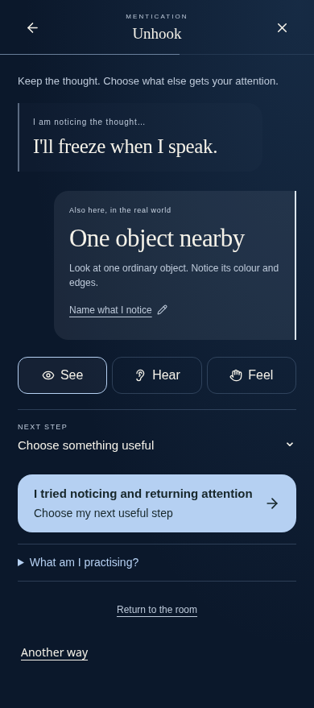
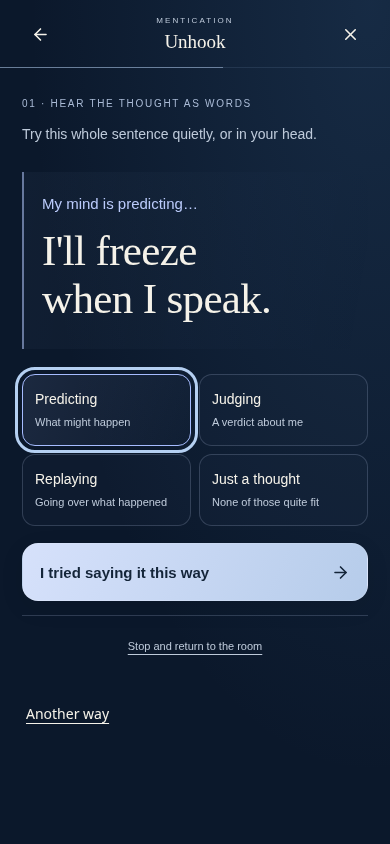
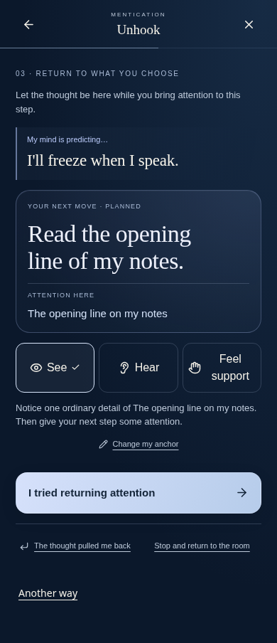

Before: existing practice

After: try the noticing frame

After: return to a real next step

Actual integrated browser captures · 390 × 844 viewport · before: a3d2cad · original notice and chosen action preserved


